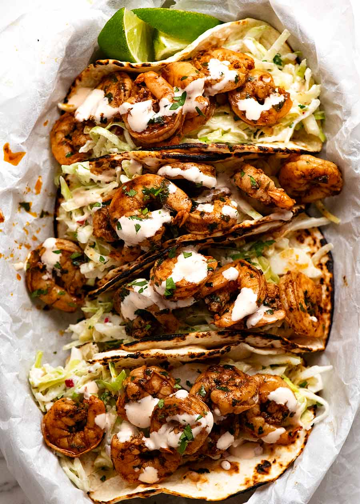

← Back to Homepage
Prawn Tacos

Description
Prawn Tacos - marinated in a zingy chipotle lime marinade, seared, then stuffed into soft tortillas with a zesty creamy Taco Slaw, drizzled with my go-to Pink Taco Sauce. Time to up your taco game!
Ingredients
Prawn taco marinade
- 500g/1 lb medium prawns/shrimp , peeled (frozen thawed, or 1 kg / 2lb unpeeled whole)
- Zest of 1 lime (or lemon)
- 1/4 cup lime juice (or lemon)
- 1 tbsp chipotle powder (MEDIUM spicy, can reduce to 2 tsp for MILD)
- 2 tbsp coriander/cilantro , finely chopped (sub chives)
- 2 garlic cloves , minced
- 1/4 cup olive oil
- 1/2 tsp each salt and pepper
Taco slaw
- 8 cups green cabbage , finely shredded (about 1/4 head)
- 1/2 onion , very finely chopped (brown, yellow, white)
- 3/4 cup plain yogurt (like Greek), unsweetened
- 1/4 coriander/cilantro , finely chopped (sub chives)
- 1/4 cup lime juice (or lemon)
- 1/4 cup extra virgin olive oil
- 1/2 tsp each salt and pepper
Pink taco sauce
- 3/4 cup sour cream (or yogurt)
- 2 - 3 tbsp sriracha , adjust to taste
To cook & serve
- 1 tbsp olive oil
- 12 - 15 small tortillas (corn or flour), warmed or charred per packet
- Coriander/cilantro , roughly chopped
Steps
- Mix Marinade ingredients in a bowl, then toss the prawns in the marinade.
- Set aside for just 20 minutes - no longer. Even 5 minutes is enough.
- Warm a serving bowl using any method (microwave 1 minute, hot water then dry).
- Heat 1 tablespoon oil in a large skillet over high heat. Add half the prawns and cook each side for 60 seconds (or on a BBQ on high heat, suggest double skewer for easy rotation).
- Transfer to warmed bowl, loosely cover with foil. Cook the remaining prawns.
- Serve with Slaw, Pink Taco Sauce, warmed tortillas and lime wedges.
Taco slaw
- Place all ingredients in a very large bowl then toss well (I use my hands!).
- Set aside for at least 1 hour until the cabbage becomes wilted and floppy. Keeps for 3 days!
Pink taco sauce
- Mix ingredients and adjust Sriracha to your taste. Mix well - sour cream becomes looser the more you mix it.